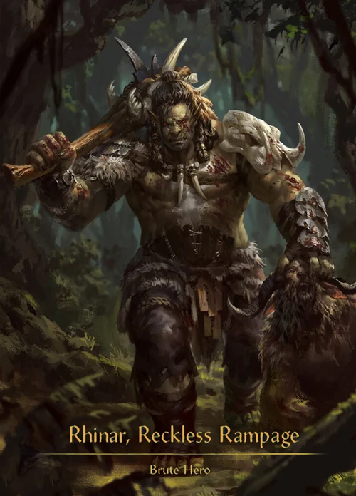

Intimidate
Può costringere l'avversario a mettere temporaneamente una carta dalla propria mano a faccia in giù.
Reckless Rampage
Scopri uno degli eroi più brutali di Flesh and Blood. Rhinar combatte sfruttando forza, intimidazione e attacchi devastanti.
Scopri RhinarRhinar è un eroe della classe Brute. Il suo stile di gioco è basato sulla forza e sulla possibilità di sorprendere l'avversario con attacchi molto potenti.
Le sue carte possono sfruttare la casualità e gli scarti per ottenere effetti ancora più devastanti.

Classe: Brute
Stile: Aggressivo
Punto di forza: Danni elevati
Può costringere l'avversario a mettere temporaneamente una carta dalla propria mano a faccia in giù.
Molte carte di Rhinar richiedono di scartare carte con valori specifici per ottenere effetti potenti.
Rhinar punta a creare attacchi enormi e difficili da bloccare.